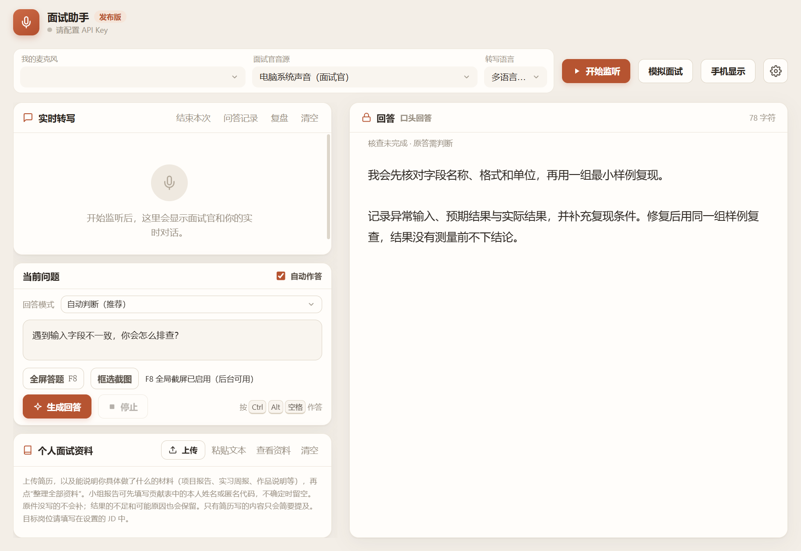

正式面试
你来答，助手提示
在线面试时，转写面试官的问题，几秒内给出回答要点。面试官说到一半停顿，答案不会被清空，等他说完再按完整问题更新。
面试助手实时转写面试官的问题，根据你的简历和项目资料起草回答要点。平时用来模拟练习，面试后逐题复盘。
支持 Windows 和 Mac（测试版）。需要领取授权；可以用自己的 OpenAI API Key，内测用户也可以用维护者提供的体验额度。
面试官这个项目里你具体负责哪一块？遇到过什么困难？
同一套资料，用在三个场景。
你来答，助手提示
在线面试时，转写面试官的问题，几秒内给出回答要点。面试官说到一半停顿，答案不会被清空，等他说完再按完整问题更新。
你来答，事后对照
按岗位要求出题并追问，你用麦克风作答。答完再看参考回答，结束后生成复盘，指出哪里没讲清楚。
AI 按你的资料作答
先看一遍某个岗位可能会被问什么、你的资料能不能撑住，找出需要补充的经历。预演不代表你本人的表现。
左边是转写和问题，右边是回答。截图里的内容都是编的示例。

加维护者微信，备注“面试助手内测”。通过后把设备码发过来，会发授权文件，并拉你进内测群。